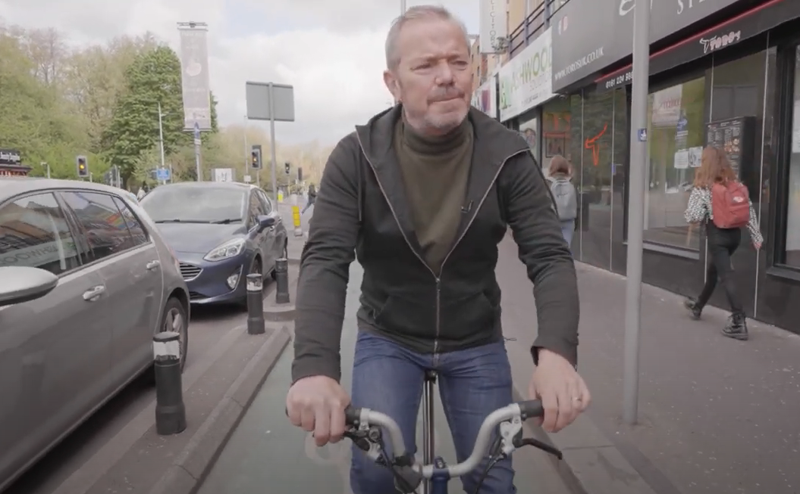

MAY 2022 EMAIL BULLETIN - SOCIAL RIDE 12th JUNE
Bike Week 2022
Your health, your climate, your pocket and your community are all better by bike. Take part in Bike Week from 6-12 June 2022.
Cycling UK Bike Week Website for more information

Portsmouth Cycle Forum ride to Gosport Sunday 12th June 11am
Join us for a cycle over to Gosport, and the Powder Monkey brewery at Priddy's Hard. Meet 11am Victoria Park by the birds in the middle. Open to all, this will be a leisurely paced ride with two options ; one longer (via Portchester and Fareham) and one shorter, via the Gosport ferry. You can choose either route to get home again but remember to bring money for the ferry if you want to take it.
Lunch and drinks are available to buy at Powder Monkey, but kiddies are welcome to bring a picnic if that's easier. There's space to put down a picnic blanket and have a run around. If it's raining, we'll have lunch inside before heading back, so do bring a bike lock with you.
Other than the ferry, the ride is being provided for free, but donations to help keep us afloat are always welcome.

Portsmouth Friends of the Earth Ride
Join Portsmouth Friends of the Earth for a leisurely bicycle ride with an historical theme to about some of the people from other countries who have made Portsmouth their home. This is a short linear ride of approximately 5 miles with several stops at place of interest relating to the theme. It’s suitable for both confident cyclists and those with limited experience of riding on roads with traffic.
Full information and to register please follow this link

Active Travel - The Art of the Possible
We often talk about creating #ACityToShare. But how can it be done and what would it look like?
The Netherlands is often cited as the place to visit and experience the difference in culture, but increasing UK cities are producing infrastructure and schemes that outline approaches to follow.
In the linked video Liverpool City Region Walking and Cycling Commissioner Simon O'Brien looks at the possibilities around Active Travel. Watch the You Tube Video

2022 AGM Wrap Up
The minutes of our 2022 AGM are now available to view on our website, as well as outgoing Chair Ian Saunders's annual report. A new Constitution was discussed and approved and as previously mentioned we are still looking for people to help out either as part of the committee or one of the new project teams being put together, specifically the team working on engagement events, rides and meetings over the next few months.
Contact info@pompeybug.co.uk if you would like to help out.
2022 AGM documents page